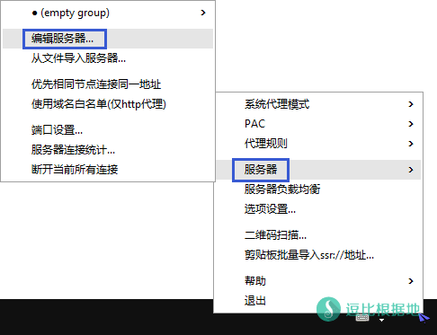
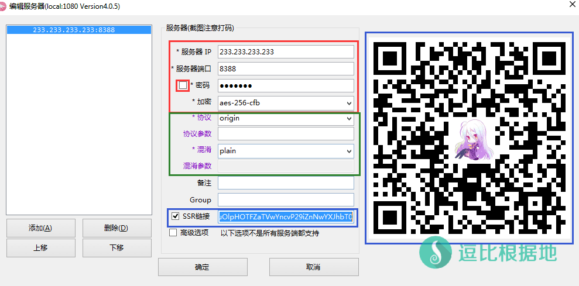
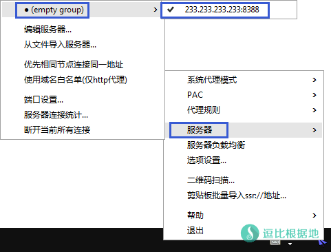
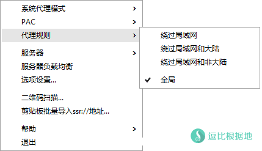
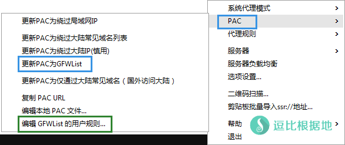
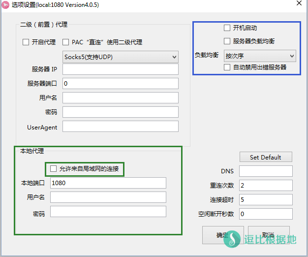
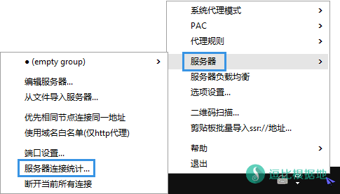
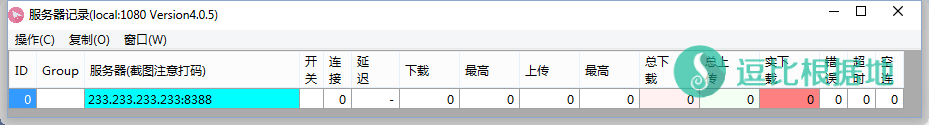
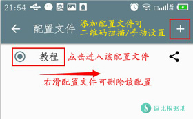
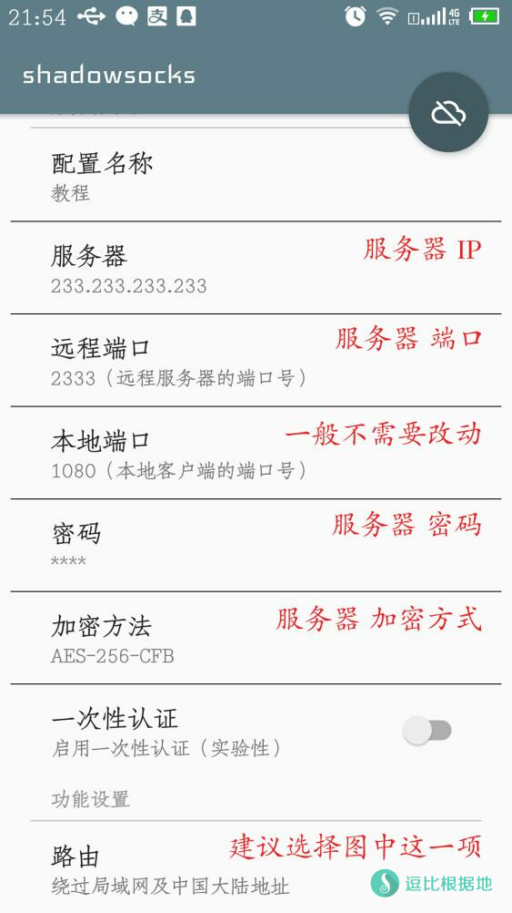

事实证明小白还是有的，所以我又专门做了个小白教程，一步一步都教给你们！
Shadowsocks原版和ShadowsocksR的区别看这里：Shadowsocks小白问题合辑
Shadowsocks无法使用的排除方法：Shadowsocks 无法使用 排除方法
ShadowsocksR作者的博客：https://breakwa11.blogspot.co.at/
ShadowsocksR客户端的一些隐藏技巧：ShadowsocksR 客户端 各种隐藏使用技巧说明
ShadowsocksR客户端使用教程
一、下载客户端
IOS版看这里：IOS系统推荐几款支持Shadowsocks的代理软件
如果网盘失效，请自行去GitHub上面查看最新版本。
ShadowsocksR作者被威胁停止更新并已删除项目，客户端请去 逗比云 下载。
ShadowsocksR：GitHub
ShadowsocksR安卓版：GitHub
ShadowsocksX-NG(MAC版)：GitHub
Shadowsocks原版(另一人接手)：GitHub
Shadowsocks原版 安卓版：GitHub
ShadowsocksR跨平台客户端：avege，electron-ssr
Shadowsocks原版作者喝茶后无法更新(另一人接手)，ShadowsocksR作者接手！
XP默认并没有安装 .NET Framework v2.0和v4.0，需要手动安装。
Win7/8/10的系统一般都安装了 .NET Framework v2.0和v4.0 所以都能用。
MAC请选择：ShadowsocksX-R、ShadowsocksX-NG、GoAgentX-SSR.dmg（GoAgent的SSR插件）
注意：软件分 dotnet2.0和4.0，实际功能无区别，这是你根据你安装.NET Framework v2.0或4.0的支持库版本，一般 Win7 以后都默认安装了v2.0，Win8 以后都默认安装了2.0和4.0，只有 XP系统 两个都默认没有安装，需要手动安装支持库！.NET Framework v4.0 下载
教程里的服务器信息（233.233.233.233）只是示例，怎么那么多人傻了吧唧的跟着填，然后说教程有问题用不了巴拉巴拉的！
二、添加服务器
首先根据你系统安装 .NET Framework v2.0或4.0的支持库 来选择客户端中的 ShadowsocksR-dotnet2.0.exe 或 ShadowsocksR-dotnet4.0.exe 并打开客户端。
这时候，右下角托盘图标会出现一个纸飞机，然后右键 纸飞机 图标，弹出菜单并选择 服务器 —— 编辑服务器 。

然后就会出现 编辑服务器的窗口，默认是有一个节点配置示例的，你可以 直接改 或者 删掉 新添加一个服务器。
接着就是填写Shadowsocks账号信息。
依次填写 服务器 IP、服务器端口、密码、加密方式，如果你的账号是原版Shadowsocks，那么写到这里就行了。
如果你的账号是ShadowsocksR账号，那么根据ShadowsocksR账号信息，选择对应的协议和混淆（origin/plain是原版SS的意思）
根据需要，你可以填写 备注 和 Group（分组） ，具体效果自己试一下就知道了。
密码前面的 选择框 是明文显示密码的意思。
然后一些人会问为什么右边显示二维码的地方老是显示一个图片却不显示二维码？
实际上主要是很多人截图不知道打码，暴露了自己的Shadowsocks账号所有信息，所以默认都是不显示二维码的，只要点击 下图蓝条选中的SSR链接输入框，就会显示二维码了。
而SSR链接前面的 选择框 ，勾选代表是显示SSR的二维码，不勾选则显示SS的二维码。
填写完毕后，点击 确定 按钮，继续下一步。

扫描二维码
有时候我们可以通过扫描二维码添加服务器。
右键 纸飞机 图标弹出菜单并选择 扫描二维码...
注意，尽量Shadowsocks二维码放大一些，放中间一些，最好旁边没有乱七八糟的东西干扰影响。
然后就会出现下图情况，很酷炫的样子。扫描完就会弹出编辑服务器的窗口，点 确定 就好了！

三、选择服务器
右键 纸飞机 图标，出现菜单并选择 服务器 —— 分组(empty group) —— 要使用的Shadowsocks账号 。

启动代理
右键 纸飞机 图标弹出菜单并选择 系统代理模式 —— PAC模式 或 全局模式
目前ShadowsocksR客户端的国内外分流规则分两种，PAC规则（系统代理模式） 和 代理规则
PAC规则 是根据PAC文件中的黑白地址名单来判断那些网站走代理，也就是判断 流量数据是进入SSR客户端还是直连。
代理规则 是根据IP判断，分 绕过局域网/绕过局域网和大陆/绕过局域网和非大陆 ，用于判断 进入SSR客户端的数据流量是走代理还是直连。
- 绕过局域网，局域网内IP 不走代理直连，局域网外IP 都走代理。
- 绕过局域网和大陆，访问网站的是 大陆IP 都不走代理直连，访问 非大陆IP 的网站都走代理。
- 绕过局域网和非大陆，访问网站的是 大陆IP 都走代理，访问 非大陆IP 的网站都不走代理，这个一般是海外访问国内网站用的。
这两种判断方式是相互配合使用的，先用系统代理模式来判断是否让数据进入SSR客户端，再用代理规则来判断进入SSR客户端的数据是直连还是走代理。
举个栗子：假设系统代理模式为 PAC，那么访问 www.google.com ，浏览器在PAC文件中匹配这个域名，并发现这个域名按PAC规则规则应走代理，所以 浏览器就会发送 访问网页数据到 PAC中的代理服务器(默认如127.0.0.1:1080)，于是SSR客户端就收到了 访问谷歌的数据，而这时候就该用 代理规则 判断了。
首先代理规则为：绕过局域网，则判断 www.google.com 域名的IP是否是局域网IP，然而不是局域网IP，于是走代理。
代理规则为：绕过局域网和大陆，则判断 www.google.com 域名的IP是否是局域网IP 或 大陆IP，然而不是局域网IP或大陆IP，于是走代理。
代理规则为：绕过局域网和非大陆，则判断 www.google.com 域名的IP是否是局域网IP 或 非大陆IP，然而是非大陆IP，于是不走代理，直连。
代理规则为：全局，不判断 www.google.com 域名的IP，直接走代理。
总归，如果你实在不理解，那么你就代理规则选择 全局，系统代理模式选择 PAC 即可，可以以后慢慢尝试和理解。
或者也可以试试这个：ShadowsocksR PC客户端中的 [代理规则 – 用户自定义] 功能使用教程


选择完模式后，就会自动设置系统代理并链接Shadowsocks账号了。
关于 PAC模式 和 全局模式 的区别请看这里：Shadowsocks（Sock5代理）的PAC模式与全局模式与VPN的区别。
简单的说，你选择PAC模式的话，只有访问被墙的网站才会走代理，访问国内的网站不走代理，当然一些网站被墙了 没人提交的话，就需要你自己添加PAC网址规则了。
需要注意的是，ShadowsocksR的客户端默认不自带 PAC.txt 文件，这时候你选择 PAC模式 ，因为没有PAC文件，所以实际上和选择 全局模式 是一样的。
所以我们就需要 更新PAC为GFWList 。
注意：因为ShadowsocksR暂停更新并删除项目，所以更新PAC会提示错误，手动更新：
如果你需要 添加PAC规则 ，那么你可以 右键 纸飞机 图标弹出菜单并选择 PAC —— 编辑 GFWList 的用户规则...
添加/编辑教程：Shadowsocks手动 添加和编辑 PAC中的网址规则

部分浏览器并不是默认的使用系统代理所以需要手动调整，一般都是在 浏览器设置 — 网络 里的。
还要注意Chrome只允许一个扩展独占代理设置，所以如果无法使用就检查一些有没有被其他的插件独占了代理设置！Chrome并不需要扩展辅助Shadowsocks！
Shadowsocks无法使用的排除方法：Shadowsocks 无法使用 排除方法
ShadowsocksR其他功能介绍
选项设置
在右键 纸飞机 图标后弹出菜单并选择 选项设置 ，然后你就会看到下面的窗口。
当你需要局域网内其他设备链接你这个电脑上面的Shadowsocks账号时，你需要勾选 本地代理 —— 允许来自局域网的链接 。
当然其他设备链接 你这个电脑上面的Shadowsocks账号的时候，软件要一直开着并链接着Shadowsocks账号。
开机启动 不需要我解释了吧。
负载均衡功能，官方的解释是：
负载均衡功能，适用于网页浏览，不适用于看视频或下载等需要大流量的环境。如需下载请在连接统计窗口通过下载测速测试速度最快的服务器然后单独连接之。
简单的说就是，用用这个节点用用那个节点，不照着一个节点用，并不是所有Shadowsocks账号都一起使用，达成所有节点负载均衡的目的。所以大流量的时候不要开这个。
自动禁用出错服务器，这个就是当你某些Shadowsocks账号无法使用，会自动禁用，避免开启 负载均衡 的时候使用到无法连接的Shadowsocks账号。

服务器连接统计
ShadowsocksR的客户端可以记录统计并实时显示你的Shadowsocks账号使用情况。
查看方法：右键 纸飞机 图标弹出菜单并选择 服务器 —— 服务器连接统计... ，就会看到服务器记录的窗口了。


安卓客户端使用方法
安卓的使用方法也很简单，只要照着选项填写就好了！
下面的路由建议选择第三项 绕过局域网和大陆，这就相当于电脑的PAC模式。
点击右上角的 圆圆的按钮 就会启动代理了！


注意事项
使用Chrome浏览器无法科学上网的时候，注意你的设置页面 chrome://settings/，是否提示的有插件独占代理设置了，如果有，请关掉！
Shadowsocks无法使用的排除方法：Shadowsocks 无法使用 排除方法
转载请超链接注明：逗比根据地 » ShadowsocksR 客户端 小白使用教程
责任声明：本站一切资源仅用作交流学习，请勿用作商业或违法行为！如造成任何后果，本站概不负责！


代理规则，是根据IP判断，分 绕过局域网/绕过局域网和大陆/绕过局域网和非大陆 ，用于判断 进入SSR客户端的数据流量是走代理还是直连。绕过局域网和大陆，访问网站的是 大陆IP 都不走代理直连，访问 非大陆IP 的网站都走代理。
=======================
站主啊，咨询一下，今天我登陆一个论坛，那边在个人资料里显示我访问的ip是mei国ip。但是我设置的是代理模式是pac，代理规则是加绕过局域网和大陆啊，那个网站是国内网站，按理说第一步的模式决定了流量不会进ssr啊，但是为什么论坛显示是美国ip访问的啊。。。
最近墙改变了封禁方式，改成了回程TCP封锁，也就是如果检测到确定是代理服务器，就会封锁TCP，ICMP(Ping) 还是能通的，但是任何TCP流量都会被阻挡。
墙检测到你的服务器可能是代理服务器时，就会TCP回程阻断，可能是封锁单个端口，也可能是22 80以外端口封锁，也可能是全部端口封锁。
你可以用 tcping 来测试端口：Windows 使用 TCPing 工具来获取 TCP延迟、端口通顺情况、已禁Ping服务器的延迟
如果你没有用浏览器扩展管理代理，那么你这种情况可能是SSR客户端意外关闭或者未知原因导致关闭的时候没有初始化系统代理设置，导致你使用浏览器时依然会走代理，但是你没开SSR客户端，浏览器就会提示找不到代理服务器之类的错误，你可以每次关闭SSR前试试把 系统代理模式 改为 直连模式(初始化系统代理设置)，或者用浏览器扩展管理代理。
断开当前所有连接 和 局域网设置-代理服务器设置 没有关联，你直接结束SSR客户端进程，他自然无法在退出前初始化还原系统代理设置。想要初始化，请点击 系统代理模式 - 直连模式 。
而 断开当前所有连接 功能就是当你切换服务器时，想要立即切换到 服务器A 并不像等待 服务器A建立的链接传输完毕平滑切换。点击 断开当前所有连接 后就会断开当前所有服务器链接，这样 SSR客户端会自动使用切换后的 服务器B。
让别人测试过你的SSR账号吗？
两个都做一下，可以排除问题大概在哪里。
绕过局域网和大陆 谷歌翻译无法使用，应该是SSR自带的 中国IP段不准确的问题。
SSR 因为删除项目，所以PAC更新功能失效。需要手动下载，手动下载这个 pac.txt 文件，关闭SSR客户端后，覆盖到SSR客户端所在目录下的 pac.txt 即可，这个PAC文件是GFWList，每天自动更新，不过GFWList更新慢，必须要经常更新的。
当然可以配置路由：绕过局域网和大陆IP等，也可以分应用代理，让一些应用走代理，一些不走代理。